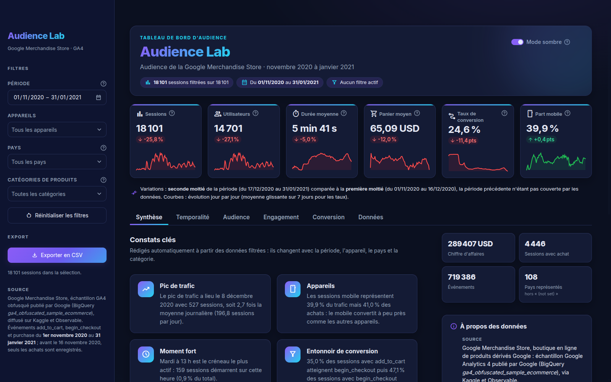

Qui visite la Google Merchandise Store, quand, sur quel appareil, et où perd-elle ses acheteurs ? Tableau de bord Streamlit sur 18 101 sessions GA4.
Abdoul-Aziz ZOROMMaster 1 Intelligence Artificielle · Université Aube-NouvelleVisualisation de Données avec Python · Dr. Zakaria Sawadogo19 octobre 2026

Soutenance · Projet pratique de visualisation d'audience01 / 10
02Problématique
Lire une boutique en ligne comme un média
Le sujet porte sur l'audience d'une plateforme en ligne. J'ai choisi un vrai site e-commerce mesuré par Google Analytics 4, et quatre questions qui structurent toute l'analyse.
1
Quand les visiteurs viennent-ils ?
Saisonnalité de fin d'année, jours et heures de pointe.
Onglet Temporalité
2
D'où et sur quel appareil ?
Parts par appareil, par pays et par catégorie de produit.
Onglet Audience
3
À quel point s'engagent-ils ?
Durée de session, nombre d'actions, valeur ajoutée au panier.
Onglet Engagement
4
Où les perd-on ?
Entonnoir add_to_cart, begin_checkout, purchase.
Onglet Conversion
Analogiesession = visite·appareil = support de lecture·entonnoir d'achat = fidélité du lectorat
Audience Lab · Soutenance02 / 10
03Données
Trois mois de la Google Merchandise Store
Google Analytics 4, données réelles
Jeu public ga4_obfuscated_sample_ecommerce publié par Google, diffusé sur Observable et Kaggle. Du 1er novembre 2020 au 31 janvier 2021 : Black Friday, Noël, creux de janvier.
events.csv un événement e-commerce par ligne758 884
items.csv catalogue, 21 catégories1 381
users.csv valeur vie client270 154
758 884
événements bruts
18 101
sessions reconstituées
14 701
utilisateurs distincts
108
pays, plus « (not set) »
Temporelle : horodatage à la secondeNumériques : prix, durée, valeur du panierCatégorielles : appareil, pays, catégorie
Audience Lab · Soutenance03 / 10
04Démarche de nettoyage
Ne rien supprimer sans preuve, tout chiffrer
758 884
événements bruts
lecture, info(), describe(), cardinalités
−39 498
doublons exacts
5,2 % des lignes, surtout des begin_checkout renvoyés
719 386
événements propres
dates en datetime, jointure du catalogue
18 101
sessions
22 variables, export Parquet de 4,8 Mo
Valeurs manquantes
4 555 pays manquants gardés sous « (not set) », la convention de Google Analytics : ni supprimés, ni inventés.
Temps et variables dérivées
pd.to_datetime, set_index, resample ; puis heure, jour de la semaine, mois et la clé de session.
Valeurs aberrantes (IQR)
3 000 sessions signalées, toutes conservées : elles portent 42,4 % du chiffre d'affaires.
Clé de session : user_id + ga_session_idParquet : 41,7 Mo de CSV → 4,8 MoContrôles : cohérence sessions et événements, 95 tests